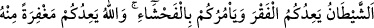
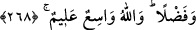

“İşte bu kelimeleri söylemen, senin için, fakirlere bir müdd altın infak etmenden
daha hayırlıdır.”[242] buyurdu.
Akıllı kimseye gereken gece gündüz Allah’ı zikre devam etmesi ve devamlı yakîn
hâlinde olup hulûs-i kalble fakîr ve miskinlere tasaddukta bulunmasıdır.
Kerem cömerdlik ve halka ikrâmdadır.
Sözde cömerdlik davul gürültüsünden ibârettir.
Büyük İskender bir gün umûmi bir toplantıya katılmış ve orada ona ihtiyaç arzeden
kimse çıkmamış. Bu durumdan pek hoşnut olmayan İskender:
“Ben, bu günü kendi mülkümden saymıyorum” demiş.
“Niçin?” diye sorulunca:
“Mülkün lezzeti, ancak ihtiyaçlıların yardım talebinde bulunması ve mal sahipleri
tarafından bu taleplerin yerine getirilmesi ile tadılır.” diye cevap vermiş.
Seriyy Sakatî (k.s.), sûfînin vasıflarını anlatırken şöyle der: Sûfîlerin yemesi hasta
birinin yemesi gibidir. Uykuları ise ârizidir. Malı mülkü bırakıp terkettikleri için
“fukarâ” olarak isimlendirilmişlerdir. Malını ve rûhunu Allah’ı talep yolunda
harcamayan sûfî dünya yârânıdır. Dünya ise vuslata mânidir. O halde bizzât muhtaç
olduğun şeyleri dahî vermeye ve bu sûretle fakrın doruğuna yükselmeye çalışmalısın!
268. Şeytan sizi fakirlikle korkutur ve size cimriliği telkin eder. Allah ise size
katından bir mağfiret ve bir lütuf vâdeder. Allah her şeyi ihata eden ve her şeyi
bilendir.
“Vaad”, muhbir cihetinden vuku bulacak zamanı belli veya belirsiz bir şeyin haber
verilmesidir. Hayır ve şerr için kullanılır. Meselâ Allah Teâlâ: “Cehennem, Allah onu
kafirlere vaadetti.” (el-Hacc, 22/72) buyurmaktadır.
“Şeytan sizi fakirlikle korkutur.” Malını tut, eğer tasadduk edersen fakir düşersin,
der. Âmirin memûrunu bir işi yapmaya teşvîk etmesi gibi şeytan sizi cimriliğe ve sadaka
vermemeğe teşvik eder. Allah ise yaptığınız infâkın günahlarınızın mağrifetine sebep
olacağını ve harcadığınızın yerine daha çok vereceğini ve bu sûretle âhırette sevâba
ereceğinizi bildirir. Böylece Allah Teâlâ, şeytanı yalanlamaktadır.
Allah’ın kudreti ve fazlı çok geniştir. Hem günahlarınızın afvı, hem de infâk ettiğinizin
yerine daha çoğunu verme konusundaki vaadini yerine getirmeye kâdirdir. Allah alîmdir.